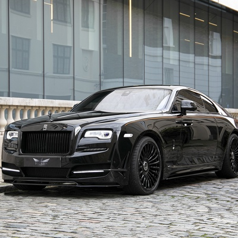
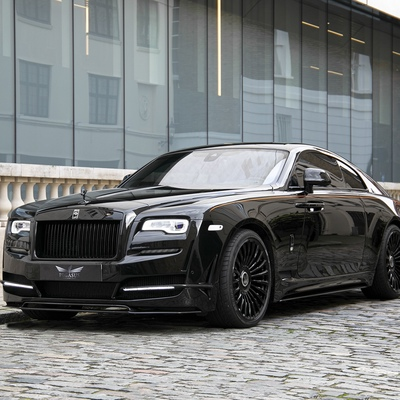

My way avtosaloni
1-saxifa
 

Rolls-Royce 2017-yil oxirida ishlab chiqarila boshlangan "Buyuk sakkizta fantomlar ko'rgazmasi"da yangi Phantom-ni namoyish etdi, sotuvlar 2018-yilda boshlanadi.Bu Rolls-Royce tomonidan ishlab chiqarilgan joriy Flagship Model va eng qimmat seriyali avtomobil.Motorli avtomobillar.2022-yilning 12-mayida taqdim etilgan II Series deb nomlangan yuz ko'tarilgan model tashqi ko'rinishdagi nozik o'zgarishlar va 4 ta qo'shimcha g'ildirak variantiga ega bo'ldi.Phantom 2ta uzunlikda,standart versiyada va faqat orqa yo'lovchilar uchun 200 mm uzunlikka qo'shilgan kengaytirilgan g'ildirak bazasi versiyasida keladi.Ikkinchisi hozirda ishlab chiqarilayotgan eng uzun sedan hisoblanadi.


Ghost birinchi marta 2019 yil 24 yanvarda uzoq kutilgan yangilanish bilan sinovdan o'tkazildi. Model 2020-yil 1-sentabrda to'liq namoyish etildi.Eng so'nggi Ghost iteratsiyasi to'liq g'ildirakli haydovchi, to'liq g'ildirak boshqaruvi, "Planar" deb ataladigan osma va yangi yoritilgan panjara bilan jihozlangan. "Planar" suspenziyasi yuqori chastotali tebranishlarni bartaraf etish uchun mo'ljallangan qo'shimcha amortizatorlar va massani o'z ichiga oladi. Rolls-Royce'da paydo bo'ladigan birinchi turdagi yoritilgan panjara an'anaviy shakldagi panjaraning yuqori uchburchak qismida joylashgan chiroqlar bilan yoritilgan spikerlarga ega.